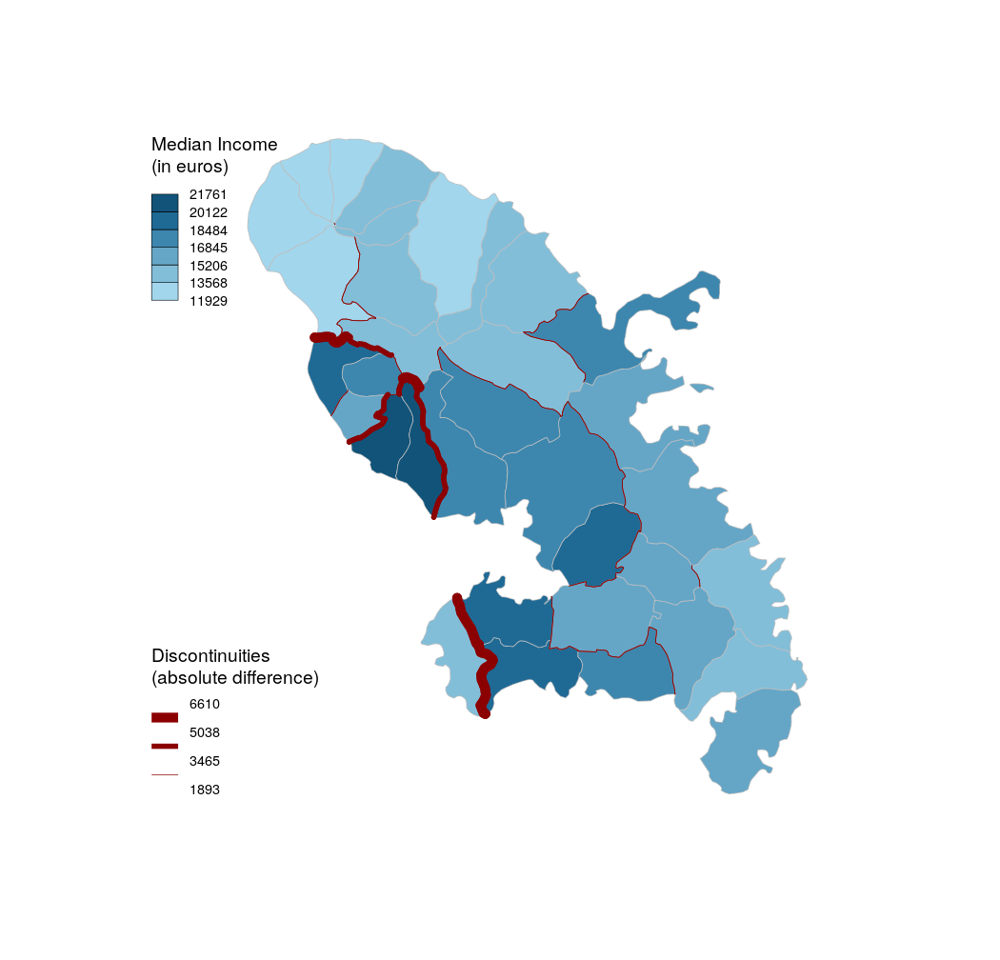

This function computes and plots spatial discontinuities. The discontinuities are plotted over the layer outputted by the getBorders function. The line widths reflect the ratio or the difference between values of an indicator in two neighbouring units.
discLayer(x, df, dfid = NULL, var, method = "quantile", nclass = 4, threshold = 0.75, type = "rel", sizemin = 1, sizemax = 10, col = "red", legend.pos = "bottomleft", legend.title.txt = "legend title", legend.title.cex = 0.8, legend.values.cex = 0.6, legend.values.rnd = 2, legend.frame = FALSE, add = TRUE, spdf, spdfid1, spdfid2)
| x | an sf object, a simple feature collection, as outputted by the getBorders function. |
|---|---|
| df | a data frame that contains the values used to compute and plot discontinuities. |
| dfid | name of the identifier variable in df, default to the first column of df. (optional) |
| var | name of the numeric variable used to compute and plot discontinuities. |
| method | a classification method; one of "sd", "equal", "quantile", "fisher-jenks"," q6", "geom", "arith", "em" or "msd" (see getBreaks). |
| nclass | a targeted number of classes. If null, the number of class is automatically defined (see getBreaks). |
| threshold | share of represented borders, value between 0 (nothing) and 1 (all the discontinuities). |
| type | type of discontinuity measure, one of "rel" or "abs" (see Details). |
| sizemin | thickness of the smallest line. |
| sizemax | thickness of the biggest line. |
| col | color of the discontinuities lines. |
| legend.pos | position of the legend, one of "topleft", "top", "topright", "right", "bottomright", "bottom", "bottomleft", "left" or a vector of two coordinates in map units (c(x, y)). If legend.pos is "n" then the legend is not plotted. |
| legend.title.txt | title of the legend. |
| legend.title.cex | size of the legend title. |
| legend.values.cex | size of the values in the legend. |
| legend.values.rnd | number of decimal places of the values in the legend. |
| legend.frame | whether to add a frame to the legend (TRUE) or not (FALSE). |
| add | whether to add the layer to an existing plot (TRUE) or not (FALSE). |
| spdf | defunct. |
| spdfid1 | defunct. |
| spdfid2 | defunct. |
An invisible sf object (MULTISTRING) with the discontinuity measures is returned.
The "rel" type of discontinuity is the result of pmax(value unit 1 / value unit 2, value unit 2 / value unit 1).
The "abs" type of discontinuity is the result of pmax(value unit 1 - value unit 2, value unit 2 - value unit 1).
#> Reading layer `mtq' from data source `/home/tim/Documents/pkg/cartography/inst/gpkg/mtq.gpkg' using driver `GPKG' #> Simple feature collection with 34 features and 7 fields #> geometry type: MULTIPOLYGON #> dimension: XY #> bbox: xmin: 690574 ymin: 1592536 xmax: 735940.2 ymax: 1645660 #> epsg (SRID): 32620 #> proj4string: +proj=utm +zone=20 +datum=WGS84 +units=m +no_defs# Get borders mtq.borders <- getBorders(x = mtq) # Median Income choroLayer(x = mtq, var = "MED", border = "grey", lwd = 0.5, method = 'equal', nclass = 6, legend.pos = "topleft", legend.title.txt = "Median Income\n(in euros)" )# Discontinuities discLayer(x = mtq.borders, df = mtq, var = "MED", col="red4", nclass=3, method="equal", threshold = 0.4, sizemin = 0.5, sizemax = 10, type = "abs",legend.values.rnd = 0, legend.title.txt = "Discontinuities\n(absolute difference)", legend.pos = "bottomleft", add=TRUE)